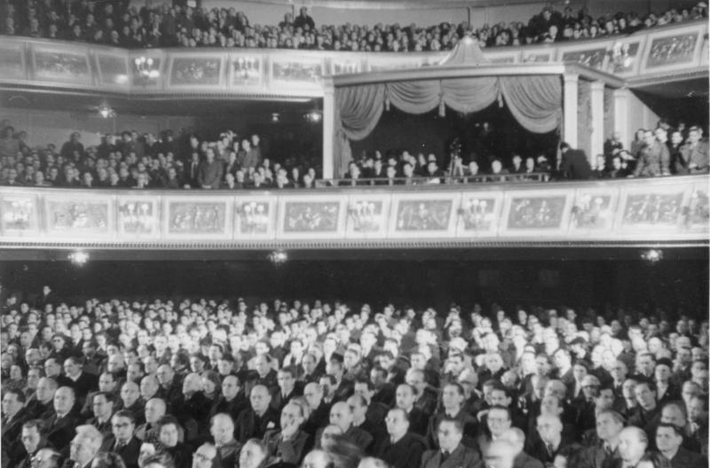

The German People's Congress
The German People’s Congress was a meeting which both citizens from the east as well as a few from the west attended, with the initiative of the SED. It took place three times, first in 1947. The main topics which were discussed were a unified German government. The congress was in favour of the soviet politics.
The second congress in 1948 appointed a council of 400 members to draft a constitution for the GDR, as well as discuss the Marshall plan and Oder-Neisse line.
The last congress in 1949 had elections beforehand where the people could vote on whether a list of people should attend the congress. The election was successful and the draft of the constitution approved. It was the last meeting.
Continue reading:
The constitution of the GDR